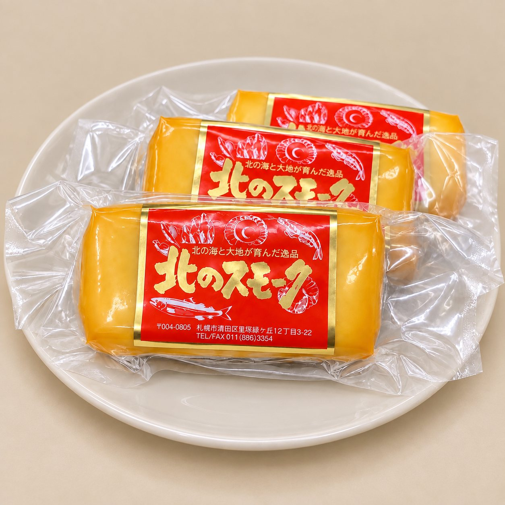
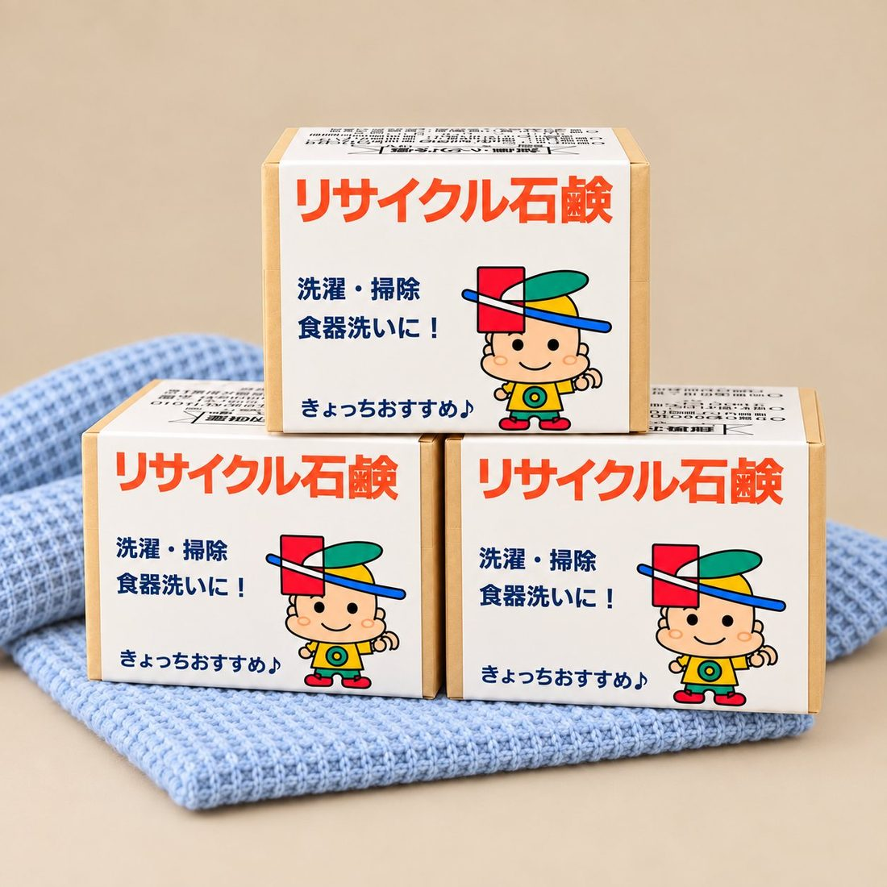
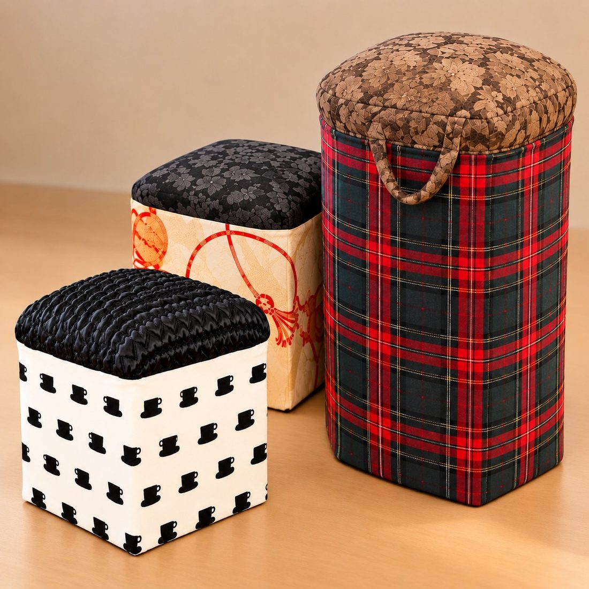
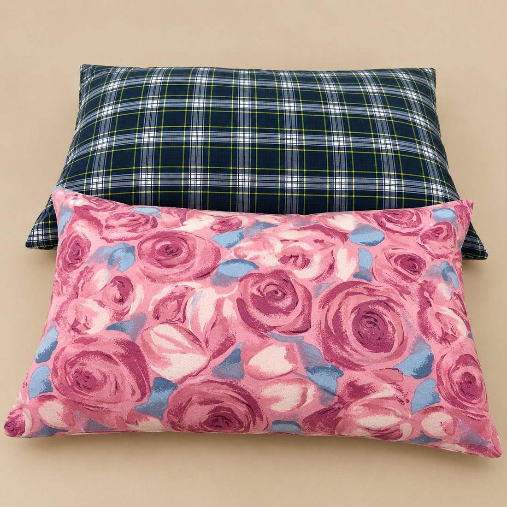

北スモ商品ラインナップ
画像をタップすると拡大と説明がご覧いただけます。
チーズスモーク

クルミのチップで燻製しています。香りも楽しめるおいしいチーズです。
北スモで一番人気の商品です。
ぜひご賞味ください。
800円（税込み）')">
ブルーベリージャム

菊芋チップス
準備中
リサイクル石鹸

リサイクル石鹸です。お洗濯・お掃除・食器洗いにお使いいただけます。
物価高の今、お求めやすい価格で販売しています。
ぜひお試しください。
80円（税込み）')">
エプロンドレス
動きやすく仕上げています。
ちょっとおしゃれで、着やすいエプロンです。
生地の在庫があれば、柄の変更も可能です。
1,000円〜（税込み）
※仕様により価格変動します。')">
ちょっとおしゃれで、着やすいエプロンです。
生地の在庫があれば、柄の変更も可能です。
1,000円〜（税込み）
※仕様により価格変動します。')">
岩手産たろう昆布
三陸の豊かな海で育った昆布ならではの、
上品で深いコクのある出汁が取れます。
950円（税込み）')">
上品で深いコクのある出汁が取れます。
950円（税込み）')">
牛乳パック椅子

椅子です。子供から大人までお使いいただけます。
形は正方形・六角形の2種類、
サイズは写真のものから多少の調整ができます。
1,200円〜（税込み）
※サイズにより価格が変わります。
※強い衝撃や無理な荷重はお避けください。')">
そばがら枕

枕です。1,000円〜（税込み）
※サイズにより価格変動します。
※そばアレルギーの方はお控えください。')">
季節品
準備中
※受注製造の商品もございます。
お電話にてご確認ください。